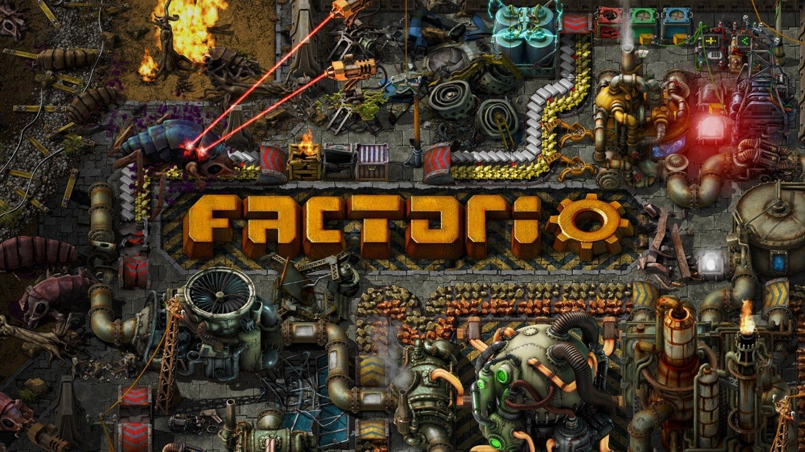

Thoughtful Hampus
My Media Biography
| Sound Name | Description | File and source |
|---|---|---|
| Marshmello ft. Bastille - Happier | This is one of my favorite songs, which is why I chose this. |
Music Video here |
| Bastille - Pompeii | This is another of my favorite songs |
Music Video here |
| Avicii - Hey Brother | These were my top 3 favorite songs to listen to. |
Music Video here |
| Image Name | Description | Image and source |
|---|---|---|
| Factorio | This is a game I currently enjoy playing on my freetime. In this game you are an engineer who has to survive after having crash landed on a planet filled with aliens. Your goal is to from scratch gather resources, build machines to work for you and then research more advanced technology to finally be able to build a new spaceship to escape the planet. |

Source Image |
| Maplestory | This is another game I am currently playing on my freetime. In this game you are an adventurer who has to stop the Black Mage from taking over the world. To do this you have to travel around the world to level up your character and gather equipment to finally defeat the Black Mage and restore peace to the world. |

Source Image |
| Osu | This is a rythm game I like to play, where you have to press circles in the rythm of the music. |
Source Image |
| Video Name | Description | Video and Source |
|---|---|---|
| Zelda A Link to the Past - Overworld Theme Acapella | This is a video of someone doing an acapella version of a song from my favorite game of all time |
Source Video here |
| Quicksort in 4 minutes | These are the types of videos I watch to learn about new programming related stuff |
Source Video here |
| If Programming was an anime | This is a video where they overexaggerate solving programming problems. I included it because I think it is funny but still informative. |
Source Video here |
Summary
I like to listen to music while I'm either playing games or when I'm programming. I like to watch videos of video games and videos to learn new stuff.
I picked my top 3 songs to listen to and 3 videos that I feel defines what my hobbies/likes are. The first video is special because it is about my favoirte game.
The second video is the types of videos I like to watch to learn something new, they should be short and direct. And for the last video I like these kinds of funny videos
and even though it is overexaggerating it is still informative and explains an actual algorithm, this way you can have a laugh and learn at the same time.